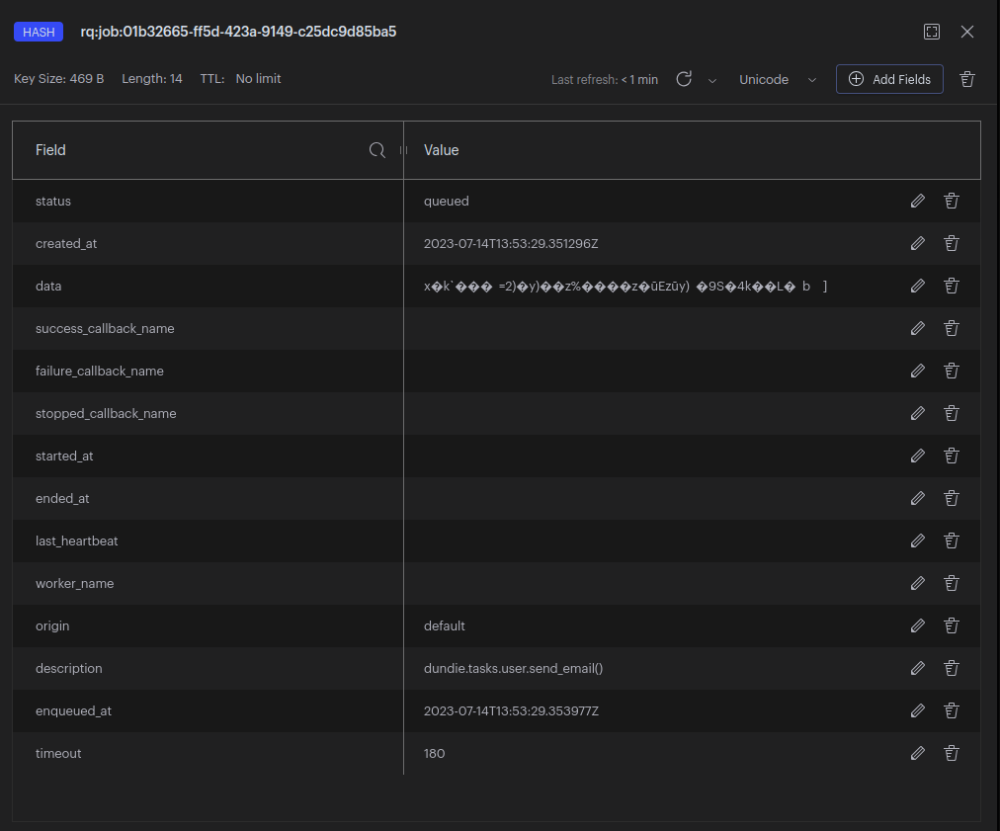
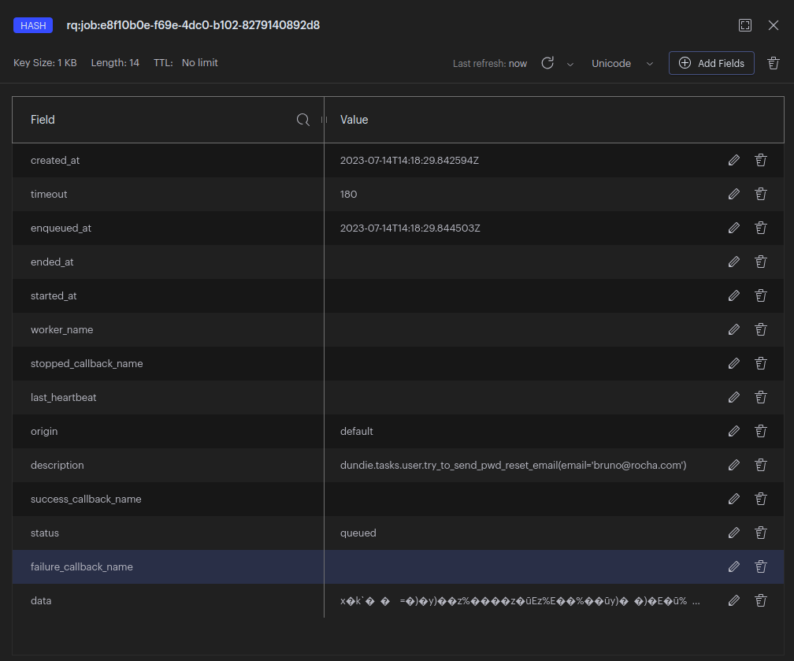

Task Queue
Enfileiramento de tarefas é uma abordagem que permite distribuir o procesamento de tarefas en diferentes unidades de processamento para obter um melhor desempenho e uma gestão mais fácil da escalabilidade do projeto.
Imagine que temos a tarefa de enviar um email como fizemos anteriormente usando BackGround Tasks do FastAPI, agora assuma que temos que enviar centenas ou até milhares de e-mails de uma só vez.
Para evitar que a aplicação fique sobrecarrega ao executar em um único processo, nós partimos para uma arquiretura de computação distribuida, onde poderemos ter várias instâncias de um worker sendo executados em paralelo.
Alguns conceitos importantes:
BROKER:
É o serviço que gerencia a fila de tarefas, entre os mais conhecidos temos o RabbitMQ, Redis, Kafka, simplificando é o serviço que recebe as tarefas e as coloca em uma fila para ser executada, uma analogia simples é pensar neste componente como um caixa de uma lanchonete que anota os pedidos e os coloca em uma fila distribuindo o trabalho entre os cozinheiros.
Para este projeto vamos usar o REDIS como BROKER.
O Redis é um banco de dados em memória, ele por si só não é considerado um message BROKER, ou seja, ele precisa de um outro processo para gerenciar as mensagens enfileiras nós usaremos REDIS como Broker pois o RQ faz o trabalho de gerenciar as mensagens no REDIS.
Em ambientes produtivos de alta escalabilidade é mais recomendado usar RabbitMQ, Kafka ou serviços especificos de cloud providers como o AWS SQS como Broker.
TASK:
É a tarefa que ficará disponível para ser executada, geralmente usamos decorators em Python ou uma chamada de função para registrar uma task, assim que registrada a task fica disponível e o BROKER pode validar o enfileiramento. Imagine que a task é um item do cardapio de um restaurante.
Existem vários sistemas de gestão de filas para Python cada um com um jeito específico de registrar uma task, alguns conhecidoss são: Celery, Dramatiq, RQ, Huey.
Em nosso projeto vamos usar o RQ pois é o mais simples de configurar e usar.
PRODUCER:
É o mecanismo que envia a tarefa para o BROKER, geralmente em Python usamos uma chamada de função onde passamos qual a task a ser enfileirada e os parametros necessários para a execução, além disso em alguns casos podemos definir coisas como tempo de expiração da tarefa, prioridade, callback e rotear para uma fila especifica. Imagine que o producer é o garçom que anota o pedido e leva até o caixa.
A produção de tarefas pode ser feita em qualquer parte do projeto, usando mecanismos providos pelo RQ iremos usar chamadas de função que enfileiram as mensagens diretamente no REDIS.
CONSUMER ou WORKER:
Com as tasks enfileiradas e devidamente configuradas precisamos de um componente que de fato irá executar a tarefa e tomar conta de coisas como contexto, re-execução, falhas, logs etc.
Imagine que o consumer (ou trabalhador) é o cozinheiro que recebe o pedido e que precisa executar a tarefa de preparo levando em consideração o contexto do pedido, a receita, a prioridade etc.
O RQ já fornece um mecanismo de worker que podemos usar diretamente no terminal ou integrar a um sistema de gestão de processos como o supervisord ou o systemd.
Arquitetura
Agora teremos que começar alterando a arquitetura de componentes da nossa infraestrutura.
Nesta Fase 2 do Projeto adicionaremos o serviço de fila de mensagens e o serviço consumidor de tarefas.
- 1 Serviço de API
- 1 Serviço de Banco de Dados
- 1 Serviço consumidor de tarefas (RQ)
- 1 Serviço de fila de mensagens (Redis)
graph TD;
A["API (FastAPI) fa:fa-globe"]
B[("Banco de Dados (PG) fa:fa-cubes")]
C>"Fila/Broker de mensagens (Redis) fa:fa-bars"]
D[["Consumidor/Worker de tarefas (RQ) fa:fa-gears"]]
A --> B
A --> C
D --> C
D --> B
Para começar vamos adicionar o serviço de fila de mensagens
usando o REDIS, para isso vamos editar o arquivo
docker-compose.yml e adicionar o serviço:
redis:
image: redis:6.2.5-alpine
restart: always
ports:
- "6379:6379"
volumes:
- dundie_redis_data:/data
volumes:
dundie_pg_data:
dundie_redis_data:
Após editar o arquivo vamos subir o serviço:
docker compose down
docker compose up -d
O client GUI oficial é o RedisInsight, você pode baixar no site oficial: https://redislabs.com/redis-enterprise/redis-insight/
Se preferir acesssar via terminal pode usar o redis-cli: https://redis.io/docs/ui/cli/

Dentro do RedisInsight vamos criar uma conexão com o REDIS e geralmente ele já irá detectar o REDIS que está sendo executado no localhost.
Podemos então criar chaves:

Tarefas
Usando o Python-RQ qualquer função pode ser enfileirada como uma tarefa, não há necessidade de registrar a task como em outros sistemas de gestão de filas como o Celery, no RQ basta que o worker tenha acesso ao mesmo contexto da função que será executada.
Em nosso projeto já possuimos uma função que envia e-mail, vamos então enfileirar esta função como uma task.
Enfileirando a Task
Para enfileirar uma task vamos precisar de uma conexão com o REDIS, e uma instancia da fila do RQ.
O primeiro passo é editar o nosso arquivo de requirements e adicionar as dependencias do RQ:
Adicione ao arquivo requirements.in:
rq # Task Queue
O pacote rq já irá instalar o Redis,
precisamos agora atualizar o arquivo requirements.txt:
Em seu computador (fora do container) execute:
pip install pip-tools
pip-compile requirements.in
cat requirements.txt | grep rq
A saida deve ser algo como:
# rq
# via rq
rq==1.15.1
Agora podemos fazer o rebuild da imagem do serviço API:
docker compose down
docker compose build api
docker compose up -d
Agora podemos entrar no shell e interagir com o Redis só para confirmar que está tudo funcionando:
docker compose exec api dundie shell
E dentro do shell
from redis import Redis
from rq import Queue
q = Queue(connection=Redis("redis"))
from dundie.tasks.user import send_email
result = q.enqueue(send_email)
print(result)
O retorno será algo como:
Job(
'01b32665-ff5d-423a-9149-c25dc9d85ba5',
enqueued_at=datetime.datetime(2023, 7, 14, 13, 53, 29, 353977)
)
Agora podemos abrir o RedisInsight e ver que a chave
rq:job:01b32665-ff5d-423a-9149-c25dc9d85ba5 foi criada.
e dentro dela temos o conteúdo da task:

Portanto já sabemos como faxer para enfileiras uma task no BROKER, essa task ainda não será executada enquanto não tivermos um worker consumindo as tarefas.
Mas primeiro vamos estruturar o nosso projeto para produzir tasks via API.
Começamos editando o arquivo de configuraçoes, default.toml
[default.redis]
host = "redis"
port = 6379
Desta forma caso seja necessário alterar a configuração do REDIS podemos fazer via variáveis de ambiente pois o Dynaconf faz a gestão das configurações.
# exemplo
DUNDIE_REDIS_HOST="meuhost"
Agora criaremos um arquivo novo dundie/queue.py
from redis import Redis
from rq import Queue
from dundie.config import settings
redis = Redis(
host=settings.redis.host,
port=settings.redis.port,
)
queue = Queue(connection=redis)
agora podemos testar no shell:
docker compose exec api dundie shell
from dundie.queue import queue
from dundie.tasks.user import send_email
queue.enqueue(send_email)
E agora no REDIS podemos ver que a chave foi criada com os detalhes da nova task.
apague essas tasks do REDIS antes de continuar.
Agora vamos alterar o nosso endpoint de pedido de recuperação de senha para ao invés de enviar o e-mail com a BackgroundTask, enfileirar uma task no Redis para usar o processamento distribuido.
Edite dundie/routes/user.py e no topo faça a importação da
queue.
from dundie.queue import queue
e nele vamos alterar a função
send_password_reset_token para enfileirar a task
portanto troque a linha:
- background_tasks.add_task(try_to_send_pwd_reset_email, email=email)
+ queue.enqueue(try_to_send_pwd_reset_email, email=email)
Reinicie os serviços e agora vamos testar via API:
docker compose down
docker compose up -d
Acesse
http://localhost:8000/docs#/user/send_password_reset_token_user_pwd_reset_token__post
E dispare um pedido de recuperação de senha.
Ou via CURL:
curl -X 'POST' \
'http://localhost:8000/user/pwd_reset_token/' \
-H 'accept: application/json' \
-H 'Content-Type: application/json' \
-d '{
"email": "bruno@rocha.com"
}'
{
"message": "If we found a user with that email, we sent a password reset token to it."
}
Agora veja se tudo deu certo no RedisInsight:

Já estamos produzindo tasks!!!
Agora vamos criar um worker para consumir as tasks.
Worker ou Consumer
Para testar podemos simplesmente executar o worker no shell:
docker compose exec api bash
~/api$ rq worker --url redis://redis:6379 --with-scheduler
14:23:11 Worker rq:worker:34f3e36d726941ceb65669ff002a79ba started with PID 20, version 1.15.1
14:23:11 Subscribing to channel rq:pubsub:34f3e36d726941ceb65669ff002a79ba
14:23:11 *** Listening on default...
14:23:11 Scheduler for default started with PID 22
14:23:11 Cleaning registries for queue: default
14:23:11 default: dundie.tasks.user.try_to_send_pwd_reset_email(email='bruno@rocha.com') (e8f10b0e-f69e-4dc0-b102-8279140892d8)
14:23:11 default: Job OK (e8f10b0e-f69e-4dc0-b102-8279140892d8)
14:23:11 Result is kept for 500 seconds
No Result é possível ver o ID da task que foi executada e o seu status alterado para finished.

Este resultado foca disponivel por 500 segundos, depois disso ele é limpo automaticamente do Redis.
Saia do terminal pressionando CTRL+C seguido de docker compose down
Agora nosso próximo passo é criar um serviço para executar o worker em segundo plano dentro de um container.
Vamos editar o arquivo docker-compose.yml e adicionar um novo serviço
worker:
build:
context: .
dockerfile: Dockerfile.dev
environment:
DUNDIE_DB__uri: "postgresql://postgres:postgres@db:5432/${DUNDIE_DB:-dundie}"
DUNDIE_DB__connect_args: "{}"
SQLALCHEMY_SILENCE_UBER_WARNING: 1
volumes:
- .:/home/app/api
depends_on:
- db
- redis
stdin_open: true
tty: true
command: rq worker --with-scheduler --url redis://redis:6379
E agora vamos executar novamente os serviços e dessa vez teremos o worker iniciado.
docker compose up -d
[+] Running 5/5
⠿ Network dundie-api_default Created 0.0s
⠿ Container dundie-api-redis-1 Started 0.6s
⠿ Container dundie-api-db-1 Started 0.6s
⠿ Container dundie-api-api-1 Started 1.7s
⠿ Container dundie-api-worker-1 Started
Abra o log do worker:
$ docker compose logs worker --follow
dundie-api-worker-1 | 14:33:39 Worker rq:worker:fc005b5371eb43bf90dd5ba688a72e8f started with PID 1, version 1.15.1
dundie-api-worker-1 | 14:33:39 Subscribing to channel rq:pubsub:fc005b5371eb43bf90dd5ba688a72e8f
dundie-api-worker-1 | 14:33:39 *** Listening on default...
dundie-api-worker-1 | 14:33:39 Scheduler for default started with PID 7
E agora dispare mais pedidos de recuperação de senha via API/;
curl -X 'POST' \
'http://localhost:8000/user/pwd_reset_token/' \
-H 'accept: application/json' \
-H 'Content-Type: application/json' \
-d '{
"email": "bruno@rocha.com"
}'
Verá que no log do worker aparecerá a task sendo executada.
dundie-api-worker-1 | 14:36:01 default: dundie.tasks.user.try_to_send_pwd_reset_email(email='bruno@rocha.com') (14e53a7a-7fb9-4bc1-896a-5d0341e6b281)
dundie-api-worker-1 | 14:36:02 default: Job OK (14e53a7a-7fb9-4bc1-896a-5d0341e6b281)
dundie-api-worker-1 | 14:36:02 Result is kept for 500 seconds
Aconselho ler a documentação do RQ em Python RQ Docs
Em nossa próxima aula iremos agendar tarefas com o scheduler do RQ.